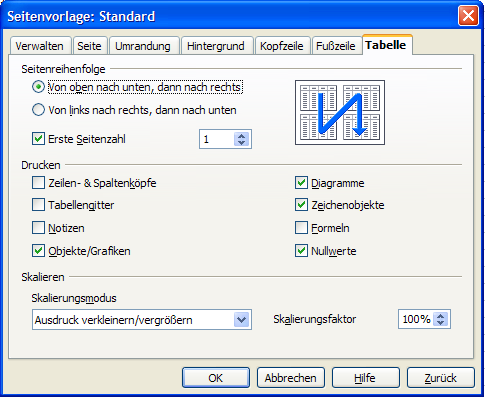

| [zurück] | [Hauptmenü] | [weiter] |
| [PDF] | ||
Wie Sie die Druckoptionen für Tabellen einstellen
herausgegeben von
dem OpenOffice.org Dokumentations-Projekt
Inhaltsangabe
1. Drucken eines Ausschnitts
OpenOffice.org bietet Ihnen die Möglichkeit, nur einen ausgewählten Bereich Ihrer Tabelle zu drucken.
Markieren Sie den zu druckenden Bereich (z.B. nur die Ergebnisspalte, nicht aber die zugrunde liegenden Daten).
-
In der Menüleiste wählen Sie 'Format'-'Druckbereiche' und dann 'Festlegen'.
- Ihr Bereich ist nun definiert und wird in Ihrer Tabelle umrahmt
dargestellt (siehe Grafik).
In der Seitenansicht ('Datei' - 'Seitenansicht') können Sie kontrollieren, dass nur die gewählten Daten gedruckt werden. -
Sie können so viele Druckbereiche definieren wie Sie wollen, Sie brauchen sie nur zu markieren und unter 'Format' - 'Druckbereiche', 'Hinzufügen' wählen.
Achtung! Jeder Bereich wird auf einem eigenen Blatt gedruckt. -
Zum Überprüfen (oder Ändern) des gewählten Bereichs
wählen Sie 'Format' - 'Druckbereiche' - 'Bearbeiten...'.
Der gewählte Druckbereich wird in der ersten Zeile dargestellt und als 'benutzerdefiniert' bezeichnet. -
Die folgenden zwei Felder beziehen sich auf Zeilen oder Spalten, die wiederholt
werden sollen, während Ihr Bereich gedruckt wird (z.B. Überschriften).
Sie können:
-
Zellbezüge entweder direkt von Hand eingeben,
- oder das kleine Icon rechts im Fenster anklicken, und dann durch klicken und ziehen der Maus in der Tabelle den Bereich markieren der wiederholt werden soll.
2. Die Tabellen-Optionen
Der größere Teil der Druckoptionen für eine Tabelle ist durch den Menübefehl Format - Seite über den ''Tabelle'-Reiter erreichbar.

Dies ist beinahe selbsterklärend.
-
'Ausdruck verkleinern/vergrößern' erlaubt Ihnen das Druckbild in der Größe zu verändern.
- 'Ausdruck auf Seitenzahl anpassen' erlaubt Ihnen die genaue Zahl von Seiten anzugeben auf die Ihre Tabelle gedruckt werden soll. Die Größe der Tabellen wird dann angepasst um dieser Seitenzahl zu entsprechen.
Dieses Fenster erreichen Sie auch von der Seitenansicht, indem Sie auf 'Seite' in der Symbolleiste klicken.
3. Drucken einer Tabelle
Ein Trick um bestimmte Tabellen einer Gruppe oder Arbeitsmappe (zum Beispiel die erste und die dritte) zu drucken:
-
Klicken Sie auf den Reiter der ersten Tabelle um sie zu markieren,
-
halten Sie die <STRG>-Taste gedrückt und klicken Sie auf den Reiter der dritten Tabelle. Beide Tabellen sind markiert.
- Klicken Sie auf 'Datei direkt drucken' und - hokus pokus - die Sache ist gegessen!
Hinweis: Wenn Sie die gleichen Werte in mehrere Tabellen einfügen wollen, markieren Sie sie wie zum Drucken, fügen Sie Ihre Daten in die Zelle ein die Sie sehen, und dieser Vorgang wird in allen Tabellen wiederholt die Sie markiert haben (wie ein Durchschlagpapier auf dem Monitor!).
Sie finden noch mehr Druckoptionen über 'Datei' - 'Drucken...' in der Menüleiste. Wenn Sie den 'Optionen' Schalter anklicken, haben Sie die Möglichkeit, den Ausdruck von leeren Seiten zu unterdrücken oder nur markierte Tabellen zu drucken.
Um eine Seitenumbruch-Vorschau vor dem Ausdruck zu sehen,
-
wählen Sie 'Ansicht' - 'Seitenumbruchvorschau' in der
Menüleiste.
Die zu druckenden Bereiche werden mit einem blauen Rand dargestellt.
Mitwirkende
Autor: Sophie Gautier
deutsche Übersetzung: Friedhelm Abels
Korrektur & Überarbeitung: André Schnabel, Katrin Räuber
letzte Änderung: 20.09.2005
Kontakt:
OpenOffice.org Documentation Project -
http://documentation.openoffice.org
OpenOffice.org auf Deutsch -
http://de.openoffice.org
| [zurück] | [Hauptmenü] | [weiter] |
| [PDF] | ||